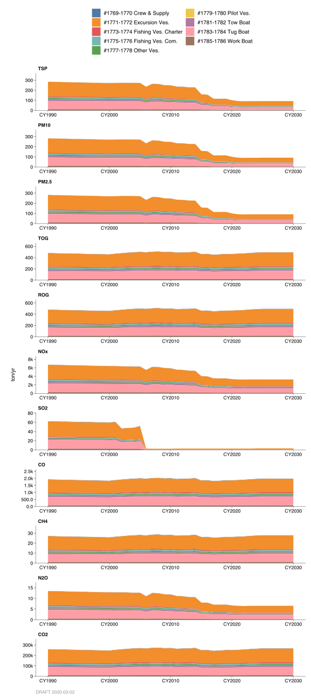

2.8 Commercial Harbor Crafts
2.8.1 Emissions
Introduction
Emissions reported in these categories are from the combustion of fuel from engines of commercial harbor crafts operating in the San Francisco Bay Area. The emission estimates for harbor crafts are developed by the California Air Resources Board (CARB) and are based on numerous data sources that include data from CARB 2004 harbor craft survey, vessel population data from governmental agencies such as California Department of Fish and Game, and engine characteristic data from various harbor craft studies/reports. The definition for commercial harbor craft means any private, commercial, government, or military marine vessels including, but not limited to commercial/passenger fishing vessels, ferry/excursion vessels, crew and supply boats, tug/tow/push boats, work boats, pilot vessels, and others that do not otherwise meet the definition of ocean-going vessels or recreation vessels. The inventory accounts for emissions from harbor crafts that navigate within 3, 24, and 100 nautical miles from the coast line of the San Francisco Bay Area region.
Methodologies
The methodology used to estimate harbor craft emissions is based on the harbor craft methodology report found in Appendix B of CARB’s 2007 Technical Support Document: “Initial Statement of Reasons for Proposed Rulemaking, Proposed Regulation for commercial Harbor Craft”. Aside from the methodology report in Appendix B, this technical support document also includes in its appendix other reports, including the 2004 Harbor Craft Survey Report, that are used to develop some of the data used in the harbor craft emission estimates. The emission inventory account for eight types of commercial harbor crafts. They are commercial fishing, charter fishing, crew and supply vessel, ferries/excursion vessel, pilot vessel, towboat/pushboat, tug boat, work boat and others. The others category include vessels that do not fit into the other seven categories, such as vessels used to dispose of cremated remains. Most of the information used including engine population, engine hours of operation, and engine load originate from the habor craft survey. The inventory does not include vessels from the U.S. Navy and/or U.S. coast Guard vessels due to limited data available on them. For each category of vessels, emissions were calculated based on emission factors specific to the main propulsion and auxiliary engine model year. Adjustments, such as engine deterioration rate, load factor, and fuel correction factor were applied to the emission estimates. These adjustments can have a significant effect on emissions and are used in the calculation to obtain a more accurate estimate of the overall emissions. Data such as load factors were based on U.S. EPA’s Nonroad model. Deterioration rate was based on ARB’s OFFROAD2007 model. For this inventory, it is assumed that all harbor crafts operating in the San Francisco Bay Area use diesel engines for both propulsion and auxiliary power. Emission estimates for each category of vessel along with engine type (main and auxiliary) are accounted for the in the inventory.
In addition to criteria pollutants, greenhouse gas emissions are included in the emission inventory. Greenhouse gas emissions, including CO2, CH4, and N2O, are taken from CARB data base. Greenhouse gas emission factors take into account fuel-specific carbon content and the percent of carbon that oxidizes to convert to greenhouse gas emissions.
Monthly and Weekly Variation
For commercial harbor crafts, monthly activity was assumed to be higher in the summer months and reduced during the winter months. Weekly activity was assumed to be constant on the weekdays and reduced on the weekends.
County Distribution
County fractions are based on actual port location where the harbor craft is registered as home. Outer continental shelf emissions are proportioned to counties adjacent to where the emissions occurred from 3 out to 100 nautical miles.
2.8.2 Trends

Emission trends forecast are based on projected fleet growth, turnover, engine deterioration, and the change of emission rates.
2.8.2.1 Control
Emissions include benefits from ARB’s Clean Diesel Fuel Regulations (Beginning 1993) and Re-Formulated Gasoline Phase II (beginning 1996). These benefits were estimated using control factors developed by ARB. In 1999, federal EPA enacted the marine engine standard requirements on new commercial marine diesel engines. Dependent on the timeline, new engines put in harbor craft must meet certain tier requirements that must comply with new emission standards. Also, in 2007, CARB approved of the commercial harbor craft regulation. This regulation became effective in 2009 and places further operation and new engine requirements for all commercial harbor craft operating in California waters. The regulation also put in-use engine requirement for ferries, excursion vessels, tug boats, and towboats. It is expected that NOx and PM emission will be reduced significantly with these regulatory requirements.
By: Tan Dinh Date: January 2014 Base Year: 2011